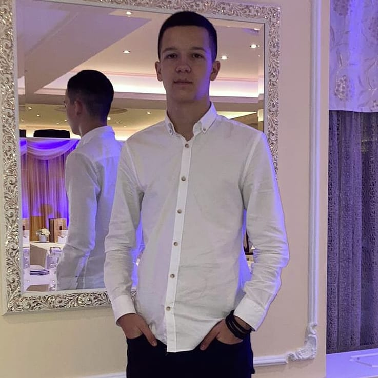

- Neki od kratkoročnih ciljeva nakon srednje škole su mi da steknem prvo radno iskustvo ili praksu, poboljšam timski rad, rad pod pritiskom i da povećam motivaciju za sticanje novih znanja
- Usavršavanje koncepta OOP i njegova primena u PHPu kao i rad u backend frameworku
- Dok su mi dugoročni planovi vezani za jak lični brending i čvrste konekcije u IT svetu
- Obožavam svaki vid organizacije, te mi je cilj da postanem Team Lead ili Scrum Master

Ciljevi i planovi
Veštine
- PHP programiranje
- Rad sa MySQL bazama podataka
- C/C#(OOP)
- Napredno znanje HTML-a i CSS-a
- Osnovno znanje JavaScript jezika i njegovih funkcionalnosti
- Poznavanje principa UI/UX dizajna
- Mogućnost dokvalifikacije do Full-Stack kroz učenje frameworka za JS
Obrazovanje
- Elektronski fakultet u Nišu
- 2022-
- Gimnazija "Bora Stanković" Niš
- Učenici sa posebnim sposobnostima za računarstvo i informatiku
- 2018-2022
Projekat HatTrick
- Maturski rad
- Sistem upravljanja fudbalske lige
- Baza podataka i CRUD Web sajt za održavanje
- Korišćene tehnologije: PHP, MySQL, DHTML
- dec 2021. - mart 2022.
- Detaljnije o projektu na mom GitHubu
Projekat Relatable
- Lični projekat
- Mini društvena mreža
- Login - Register, Postovi - Like, Dislike, Komentar
- Korišćene tehnologije: PHP, MySQL, DHTML
- maj 2022. - jul 2022.
- Detaljnije o projektu na mom GitHubu